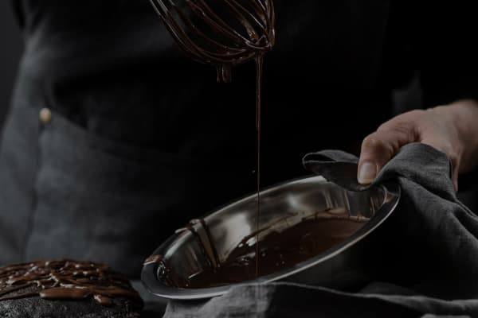

<section class="recipe">
  <div class="container">
    <h2 class="recipe-title">hOW IT’S made?</h2>
    
    <h3 class="recipe-text">
      Try our chocolates today and discover the perfect balance of flavor
    </h3>
    <ul class="recipe-list">
      <li class="recipe-item">
        <p class="recipe-item-text">
          At the same time, prepare a water bath. Melt the butter on it.
        </p>
      </li>

      <li class="recipe-item">
        <p class="recipe-item-text">
          "Mix" the milk mixture and already liquid butter. Mix thoroughly with
          a silicone spatula so that the mass becomes uniform and silky.
        </p>
      </li>

      <li class="recipe-item">
        <p class="recipe-item-text">
          Heat the mixture over low heat, letting it barely boil.
        </p>
      </li>

      <li class="recipe-item">
        <p class="recipe-item-text">
          Pour the chocolate into special containers (can be replaced with ice
          molds). Allow to cool and harden.
        </p>
      </li>
    </ul>
  </div>
</section>
